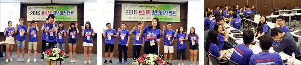
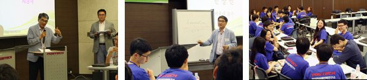
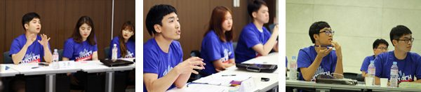
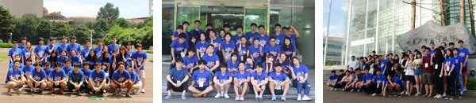
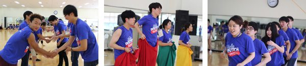
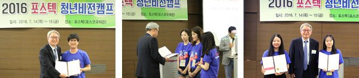

청년사업 포스텍청년비전캠프 프로그램
포스텍청년비전캠프
프로그램
캠프 소개
포스텍 청년비전캠프를 소개해드립니다
포스텍 청년 비전 캠프는, 청년들이 한국사회의 미래 문제에 대해 논의하고 해결방안을 함께 모색할 뿐 아니라, 포스텍에서 1박2일 일정으로 진행되는 동안 다양한 프로그램을 통해 청년들이 올바른 비전과 꿈을 설정하는데 도움을 주고자 합니다.
프로그램1 처음 만난 친구들과 친해지기(아이스 브레이킹)
너와 내가 만나 우리가 되는 시간 1박 2일이라는 짧은 시간이지만 포스텍 청년비전캠프를 통해 전국에서 모인 대학생 및 대학원생들이 우리가 되기 위해서 나를 소개하고 참가자들을 이해하는 소중한 시간입니다.
프로그램2 명사 초청 특강
‘청년비전캠프’의 이름에 걸맞게 청년들이 올바른 인생의 목표와 비전을 세우는데 많은 생각과 고민을 할 수 있도록 방향을 제시할 수 있는 주제로 진행됩니다. 토크콘서트 형식으로 진행되는 프로그램으로 성공한 분의 이야기 통해 자신의 꿈과 비전을 생각해볼 수 있는 기회를 마련하고, 자신의 고민에 대하여 함께 생각하고 조언을 얻을 수 있습니다.
프로그램3 에세이 발표
포스텍 박태준미래전략연구소에서 주관한 전국 대학(원)생 대상 에세이 공모전에 출품한 자신의 에세이에 대하여 발표하고 이에 대하여 토론하는 시간입니다. 포스텍 청년비전캠프의 하이라이트라고 할 수 있는 본 프로그램에서는 청년들의 목소리가 자유롭게 오갈 수 있는 토론이 펼쳐지며 거침없는 토론을 통해 대한민국의 미래의 등불을 밝히는 시간입니다. 에세이 공모전의 투명성과 공정성을 위하여 대상은 당일 진행되는 에세이 발표 및 토론 후에 심사위원들의 심사와 참가학생들의 투표에 의해 선정하여 당일 시상식도 함께 진행합니다.
프로그램4 포스텍 및 포스코 탐방
포스텍에서 개최되는 행사인 만큼 외부에서 온 학생들에게 우리나라 최고의 연구중심대학인 포스텍을 소개할 수 있도록 캠퍼스 투어와 포스코 역사관과 제철소 투어 등을 통해 뛰어난 미래전략가이자 투철한 국가적 소명의식과 탁월한 리더십을 보였던 설립자 박태준의 정신을 알 수 있는 기회를 갖도록 합니다.
프로그램5 리더십 교육
리더십 교육은 짧은 캠프 기간 동안이지만 다양한 엑티비티 활동을 통해 팀별, 개인별 경합을 벌이는 프로그램으로 참여자 간 친밀한 관계를 형성하고 팀의 일체감 조성 및 협력을 통한 시너지 효과를 경험할 수 있는 리더십 프로그램입니다. 본 리더십 교육을 통해 개인적으로 헌신과 봉사의 중요성을 깨닫고 개인보다는 팀의 중요성을 다양한 경험을 통하여 알 수 있도록 함으로써 훌륭한 조직구성원으로 갖추어야 할 리더십을 몸으로 체득할 수 있도록 합니다.
프로그램6 시상식
포스텍 박태준미래전략연구소 공모전 대상 및 우수상에 대한 시상식을 진행합니다. 그리고 1박2일에 걸쳐 진행된 청년비전캠프에서 우수한 활동을 보여준 사람들에게 개인별, 팀별로 선정하여 다양한 상을 수여합니다.





